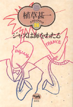
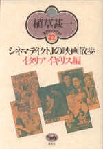

| アニメ | |
| アニメーション監督 原 恵一 | |
| 浜野保樹編 | |
| A5判 304頁 | |
| 定価2415円（本体2300円） | |
| 4-7949-6677-6 C0074 | |
| 『クレヨンしんちゃん 嵐を呼ぶモーレツ！オトナ帝国の逆襲』『クレヨンしんちゃん 嵐を呼ぶアッパレ！戦国大作戦』で、子どものみならず大人までも虜にしたアニメーション監督・原恵一。原監督やスタッフのインタビュー、絵コンテ、評論等、また海外での評価などを交えながら、原恵一の世界を徹底分析。また原監督を通して、日本のアニメの現在と未来を展望する。 |
| エッセイ | |
| 岸和田だんじり祭 だんじり若頭日記 | |
| 江 弘毅 | |
| 四六判 304頁 | |
| 定価1680円（本体1600円） | |
| 4-7949-6678-4 C0095 | |
| 「祭こそ人生そのもの」「祭の二日は人の一年や」地元の人間がそう言ってはばからない岸和田だんじり祭は、いまや「大阪の祭」の枠を超えて「日本の祭」としての地位を確かなものにしている。岸和田で生まれだんじりで育った著者が、平成十五年度の祭で若頭責任者を務めた経験を元に、祭に明け祭に暮れる怒涛の日々を綴る、爆走だんじりエッセイ。 |
 |
ジャズ |
| 植草甚一スクラップ・ブック 26巻 第11回配本 ジャズは海をわたる |
|
| 植草甚一 | |
| 四六判 224頁 | |
| 定価1470円（本体1400円） | |
| 4-7949-2586-7 C0373 | |
| アメリカ生まれのジャズが海をわたった。前衛ジャズが話題になりはじめ、フランスはじめヨーロッパのジャズ・シーンが溌剌と動きだす。Ｊ・Ｊ氏のジャズ勉強にも一段と熱が入ったこの時期に、精力的に書きつがれた単行本未収録のエッセーを中心に構成。（解説・渡辺貞夫） |
 |
ジャズ |
| 植草甚一スクラップ・ブック 27巻 第11回配本 シネマディクトＪの映画散歩 イタリア・イギリス編 |
|
| 植草甚一 | |
| 四六判 280頁 | |
| 定価1470円（本体1400円） | |
| 4-7949-2587-5 C0374 | |
| 映画は夢のドキュメントだ。アントニオーニ、パゾリーニ、そしてもちろんフェリーニ。イタリア映画の才気あふれる巨匠たちの人と作品を批評し、分析するシネマディクトＪの心が躍動する。戦後イタリア映画の特色をなしたネオ・リアリズムから、イギリス映画の新人まで、Ｊ・Ｊ氏の映画散歩・英伊編。（解説・筈見有弘） |
| 映画 | |
| 植草甚一スクラップ・ブック 29巻 第11回配本 シネマディクトＪの映画散歩 フランス編 |
|
| 植草甚一 | |
| 四六判 288頁 | |
| 定価1470円（本体1400円） | |
| 4-7949-2589-1 C0374 | |
| 大好きな映画の詩人ジャン・コクトーのことを皮切りに、忘れられないフランス映画の話をしよう。ジュリアン・デュヴィヴィエ、マックス・オフュルス、ルネ・クレマン、そしてマルセル・カルネ──巨匠たちの作品を心ゆくまで味わいつくすＪ・Ｊ・シネマテーク第二弾。（解説・飯島正） |